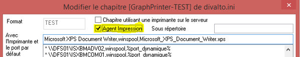
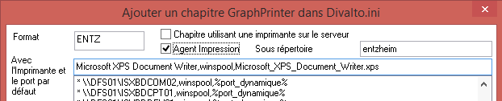
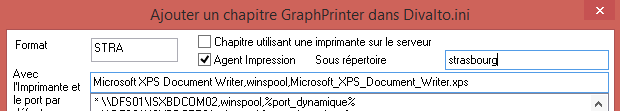

Il faut créer ou modifier dans xDivaltoPrinters un format pour le spool (comme indiqué dans la documentation xDivaltoPrinters) et cocher la case "Agent Impression".

Un sous-répertoire peut être précisé et sera notamment indispensable si plusieurs sites physiques d'une même entité sont desservis en mode "Agent d'impression".
Ce format pour le spool doit être propagé pour tout les utilisateurs du site concerné.
Lorsque ce format est utilisé, les impressions sont alors centralisées sur le serveur d'application dans le répertoire
C:\divalto\DivaltoPrintAgent\Local\Tmp
Pour chaque impression un fichier .dhvw et un aperçu (image du même non avec l'extension .PNG) sont stockées.
Sur un poste dédié de chaque site physique qui doit fonctionner en mode "Agent d'impression", il faut qu'un client léger WPF éxécute le programme suivant (créer un raccourci éxécutant la ligne de commande) :
C:\divalto\sys\Xwpf.exe -profil ERP212 -program xdivaltoagentimp.dhop -harmony_param "<nbj>1" -reloadiferror 10
De plus, il faudra, sur ce poste uniquement, paramétrer via xDivaltoPrinters un format pour le spool du même nom que celui utilisé par les utilisateurs (cf paragraphe 1.), mais qui référencera l'imprimante réelle sur laquelle doivent sortir les impressions.
C'est ce programme qui va scruter le répertoire sur lequel les impressions du site seront centralisées.
Pour chaque document qui s'y trouve, l'agent va :
- afficher l'aperçu du document en cours de traitement,
- lancer DivaltoViewer en mode "impression directe" pour ce document,
- DivaltoViewer va détecter pour le format pour le spool stocké dans le document ".dhvw" lui-même, et utilisera le format pour le spool du même nom (celui que l'on a créé spécifiquement pour le poste dédié à l'agent d'impression) pour lancer l'impression sur l'imprimante réelle,
- xDivaltoAgentImp.dhop va finalement déplacer les documents traités (pour une ré-impression éventuelle) vers le sous-répertoire :
C:\divalto\DivaltoPrintAgent\Local\Printed
Pour ré-imprimer un document il faut créer puis lancer un raccourci éxécutant la ligne de commande
C:\divalto\sys\Xwpf.exe –profil ERP212 -program xdivaltoagentimpreprint.dhop -harmony_param " "
Les documents peuvent êtres parcouru grâce au bouton "Suivant".
Par défaut les documents sont supprimés définitivement après 24h. Cette valeur peut être paramétrée dans la ligne de commande de lancement de l'agent d'impression :
C:\divalto\sys\Xwpf.exe -profil ERP212 -program xdivaltoagentimp.dhop -harmony_param "<nbj>3" -reloadiferror 10
Le paramètre -harmony_param "<nbj>3" indique que l'on souhaite donner un durée de vie de 3 jours aux documents.
En cas d'erreur entraînant l'arrêt inopiné de l'agent d'impression (coupure de liaison avec le serveur par exemple), le paramètre -reloadiferror 10 permet que l'agent se relance automatiquement après le délai, en secondes, indiqué dans le paramètre (dans le cas présent 10 secondes).
Par défaut, les documents sont stockés dans un répertoire construit comme suit :
"CheminUL1\DivaltoPrintAgent\Local\Tmp" et "CheminUL1\DivaltoPrintAgent\Local\Printed"
Ce qui donne C:\divalto\DivaltoPrintAgent\Local\Tmp et C:\divalto\DivaltoPrintAgent\Local\Printed dans le cas d'une installation par défaut.
Ces chemins peuvent être changé par l'ajout d'une clef DivaltoPrintAgent dans le chapitre "Local machine\SOFTWARE\Divalto\Divalto.ini\system" du registre avec pour valeur le chemin souhaité.
Pour l'impression en mode caractères il faut utiliser le chapitre Printer (et non GraphPrinter) du format pour le spool.
Pour le poste dédié à l'agent d'impression il faut apporter quelques attentions particulières :
- c'est le programme xdivaltoagentimpprn.dhop qui doit être lancé (modification de la ligne de commande vue dans le paragraphe 2.),
- il faut que le fichier FIHxxxx soit correctement paramétré en fonction de l’imprimante réelle qui devra imprimer les pages.
Comme pour les impressions en mode graphique, le nom du format pour le spool utilisé par les clients pour générer les documents doit correspondre au format pour le spool du poste éxécutant l'agent d'impression (lequel référence l'imprimante réelle).
Dans le cas où plusieurs sites physiques d'une même entité, et dépendant d'un même serveur d'application, doivent chacun être desservis en mode "Agent d'impression", il convient de faire les ajustements suivants :
- Il faut créer un format pour le spool dédié pour chaque site en précisant un sous-répertoire (voir paragraphe 1.)
- Il faut disposer d'un poste "Agent d'impression" dédié à chaque site physique (et paramétré en cohérence : spool correspondant au pool dédié au site et référençant la bonne imprimante réelle, cf. paragraphe 2.)
Exemple : une entreprise dispose d'un site à Strasbourg et d'un second site à Entzheim : on crée deux un formats pour le spool


Le format pour le spool adéquat sera propagé aux utilisateurs en fonction de leur site respectif et un poste dédié à l'agent d'impression sera implanté sur chacun des deux site.